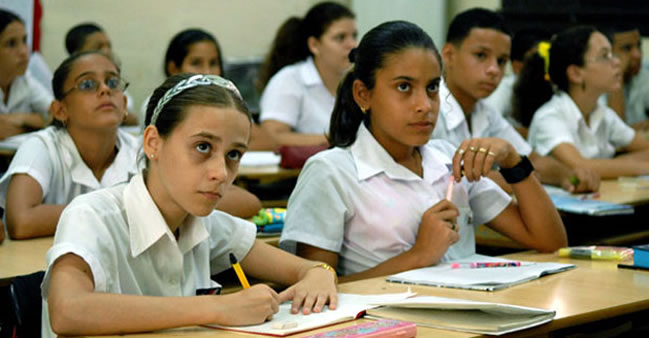
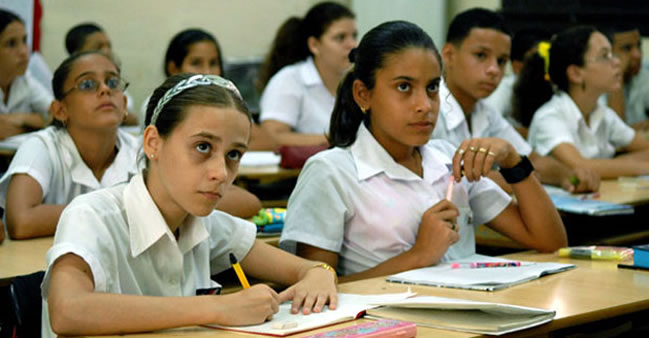

“La educación es un proceso que no termina nunca” Josefina Aldecoa
.jpg) 

DESERCION ESCOLAR:
Puede entenderse como el abandono del sistema escolar por parte de los estudiantes, provocado por la combinación de factores que se generan tanto al interior del sistema como en contextos de tipo social, familiar, individual y del entorno. La tasa de deserción intra-anual solo tiene en cuenta a los alumnos que abandonan la escuela durante el año escolar, ésta se complementa con la tasa de deserción interanual que calcula aquellos que desertan al terminar el año escolar.

Causas que provocan deserción escolar:
La deserción es un problema que no solamente afecta al desarrollo del individuo que esta dejando de
asistir a la escuela si también a la sociedad en la que se desenvuelve.
El abandono escolar se da por diferentes factores que influye a que deserten sus estudios los más comunes en los
alumnos son:
- Falta de recursos económicos.
- Problemas Familiares como la Desintegración familiar hace que los alumnos se desmotiven por sobresalir.
- Desagrado por estudiar.
Como anda nuestra Pais en temas de educacion Publica
Planeación Educativa en Monteria
OBJETIVOS:
- Coordinar, supervisar y controlar los procesos relacionados con la Gestión Estratégica de la Secretaría de Educación
- Coordinar, supervisar y controlar los procesos relacionados con la formulación y aprobación del Plan de Desarrollo Educativo y planes de acción por áreas y dependencias
- Coordinar, supervisar y controlar los procesos relacionados con la Gestión de Programas y Proyectos
- Garantizar que se definan, implementen, mantengan y mejoren los procesos del sistema de gestión de calidad, de acuerdo a lo establecido en las especificaciones técnicas emanadas por el Ministerio de Educación Nacional